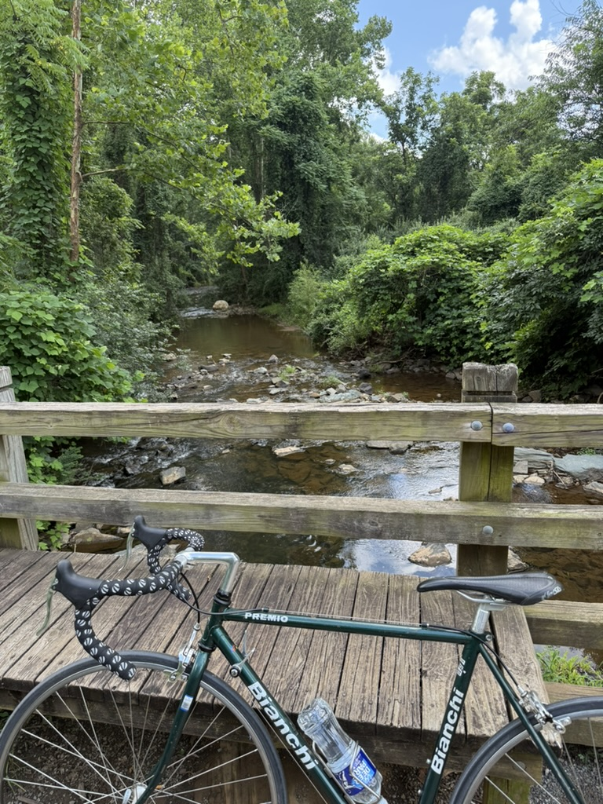

-
Road Cycling!!
I picked up this hobby during my summer research at UVA in 2025. Charlottesville is a peaceful place to ride. Beijing probably is not... Excited about riding in Santa Cruz!!

-
Sci-fi Books & Movies
One of the biggest nerds of sci-fi. Don't panic, just have a sip of the pan galactic gargle blaster.
-
Staring at Night Sky
I also enjoy stargazing. It's always so soothing and quiet under the starry sky. I've visited Xing Long Observatory in Beijing, FAST in Guizhou, Leng Hu in Qinghai, Green Bank in West Virginia, and Lick in California. Looking forward to visiting more observations in the future!